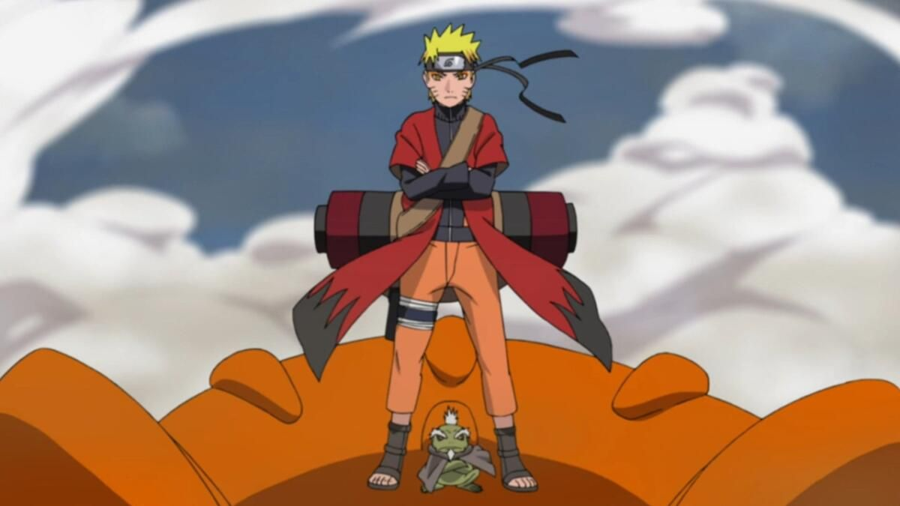

Profil
Jepang
Desa Konoha
Hokage Ketujuh
Klan Uzumaki
Kage Bunshin no Jutsu
Klan Shinobi
Klan Uzumaki
Klan Uchiha
Klan Hyuuga
Naruto Uzumaki (うずまきナルト Uzumaki Naruto) yang bergelar Hokage Ketujuh (7番目の火影 Nanadaime Hokage) adalah tokoh pendukung dari serial anime dan manga Naruto. Ia merupakan tokoh utama dalam serial ini. Ia digambarkan sebagai bocah berambut pirang dan bermata biru.
Menurut cerita, Naruto adalah seorang ninja dari desa Konoha (Konohagakure), sebuah desa fiktif yang konon tersembunyi di antara rimbunnya dedaunan hutan. Sejak kecil ia ditinggal oleh kedua orang tuanya, sehingga ia tidak pernah merasakan bagaimana kasih sayang orang tua kepada anaknya. Dengan dukungan dari teman-teman dan guru-gurunya, Naruto tumbuh menjadi pemuda yang ceria, optimis, dan pemberani.